2．数系和算术的状况
到1500年左右，零已被人接受作为一个数，无理数也用得更随便了。帕乔利、日耳曼数学家施蒂费尔（Michael Stifel，1486？—1567）、军事工程师斯蒂文（1548—1620）和卡丹都按照印度人和阿拉伯人的传统使用无理数，并引入了种类越来越多的无理数。例如，施蒂费尔使用了
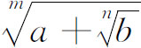
这种形式的无理数。卡丹曾把含立方根的分数有理化。使用无理数的广泛程度，以韦达那个表示π(1)的式子为例就可以看出来。韦达考察单位圆的内接正四、八、十六……边形，求出π值的式子：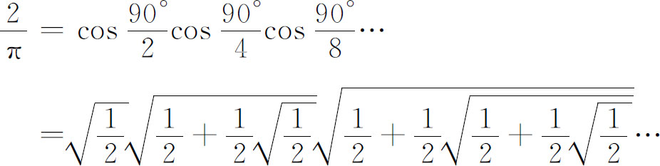
虽然人们对于用无理数进行计算是很随便的，但对于无理数是否确实是数却仍不放心。施蒂费尔在他的重要著作《整数的算术》（Arithmetica Integra，1544）这一部论述算术、欧几里得《原本》第十篇中的无理数以及代数的书中，讨论了用10进制小数的记号表达无理数的问题。他一方面说：
在证明几何图形的问题中，由于当有理数不行而代之以无理数时，就能完全证出有理数所不能证明的结果……因此我们感到不能不承认它们确实是数，迫使我们承认的是由于使用它们而得出的结果——那是我们认为真实、可靠而且恒定的结果。但从另一方面讲，别的考虑却迫使我们不承认无理数是什么数。例如，当我们想把它们数出来［用十进制小数表示］时……就发现它们无止境地往远跑，因而没有一个无理数实质上是能被我们准确掌握住的……而本身缺乏准确性的东西就不能称其为真正的数……所以，正如无穷大的数并非数一样，无理数也不是一个真正的数，而是隐藏在一种无穷迷雾后面的东西。
他接着论证说实数不外乎整数或分数；无理数显然既非整数又非分数，因而不是实数。一个世纪之后，帕斯卡和巴罗（Isaac Barrow）还说，像
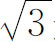
这样的数只能作为几何上的量来理解；无理数仅仅是记号，它们脱离连续的几何量便不能存在，而对无理数进行运算，要以欧多克索斯关于量的理论来作逻辑依据。牛顿在他的《普遍的算术》（Arithmetica Universalis，1707年出版，但系根据其30年以前讲课内容所写）中也持这一观点。其他一些人则肯定说无理数是独立存在的东西。斯蒂文承认无理数是数，并用有理数来不断逼近它们。沃利斯在《代数》（Algebra，1685）中也承认无理数是地地道道的数。他认为欧几里得《原本》的第五篇在本质上主要是算术性的。笛卡儿也在《指导思想的法则》（Rules for the Direction of the Mind，约1628）中承认无理数是能够代表连续量的抽象的数。
负数虽然通过阿拉伯人的著作传到欧洲，但16世纪和17世纪的大多数数学家并不承认它们是数，或者即使承认了，也并不认为它们是方程的根。15世纪的许凯（Nicolas Chuquet，1445？—1500？）和16世纪的施蒂费尔（1553年）都把负数说成是荒谬的数。卡丹把负数作为方程的根，但认为它们是不可能的解，仅仅是一些记号；他把负根称作是虚有的，而正根才算是实的根。韦达完全不要负数。笛卡儿只是部分地接受了负数。他把方程的负根称作假根，因为它们代表比无还少的数。但他指出（见第5节），对于一个给定的方程，可以得出另一个方程，使它的根比原方程的根大任何一个数量。这样，有负根的一个方程可以化成有正根的方程。既然我们可以把假根化成真根，所以笛卡儿愿意接受负数。帕斯卡则认为从0减去4纯粹是胡说。
帕斯卡的一位密友，神学家兼数学家阿尔诺（Antoine Arnauld，1612—1694）提出一种有趣的说法来反对无理数。阿尔诺怀疑-1∶1＝1∶-1，因为（他说）-1小于＋1；那么较小数与较大数的比，怎么能等于较大数与较小数之比呢？许多人都讨论了这个问题。1712年，莱布尼茨承认(2)这个反对意见合理，但申辩说可以用这种比例来进行计算，因为它们的形式是正确的，正如我们能够用虚量来进行计算一样。
最早接受无理数的代数学者之一是哈里奥特（Thomas Harriot，1560—1621），他偶尔把负数单独写在方程的一边，但他并不接受负根。邦贝利（Raphael Bombelli，16世纪）给出了负数的明确定义。斯蒂文在方程里用了正的和负的系数，并接受负根。吉拉德（Albert Girard，1595—1632）在他的《代数中的新发明》（L'Invention nouvelle en l'algèbre，1629）中把负数与正数等量齐观，并且甚至在二次方程的两根都是负数时也给出两个根。吉拉德和哈里奥特都用减号表示减法运算和负数。
总的说来，在16世纪和17世纪，并没有很多数学家对于使用负数心安理得或者承认它是数，更谈不上承认它们可以作为方程的真实的根。当时人对负数有一种古怪的信念。例如沃利斯虽比他那个时代的人先进并且承认负数，但他认为负数大于无穷大而并非小于零。他在所著《无穷大的算术》（Arithmetica Infinitorum，1655）中论证说：由于比a/0在a为正数时是无穷大，故当分母变成负数时，例如当a/b中的b是负数时，这个比必定大于无穷大。
欧洲人在还没有完全克服无理数和负数带来的困难时，就又无意地陷入了我们如今称之为复数的问题。他们在用配方法解二次方程时碰到要把求平方根的算术运算推广到任何样的数上，得出了这些新的数。例如，卡丹在所著《重要的艺术》（Ars Magna，1545）的第37章中列出并解出把10分成两部分，使其乘积为40的问题。方程是x（10-x）＝40。他求得根为
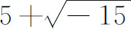
和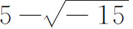
，然后说“不管会受到多大的良心责备”，把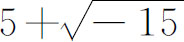
和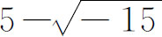
相乘，得乘积为25-（-15）或即40。于是他说：“算术就是这样神妙地研究下去的，它的目标，正如常言所说，是又精致又不中用的。”我们不久会看到，卡丹在解三次方程时（第4节），还要进一步同复数打交道。邦贝利在解三次方程时也考虑了复数，并且几乎像现代形式那样规定了复数的四种运算，但他仍认为复数“无用”而且“玄”。吉拉德则承认复数至少可作为方程的形式解。他在所著《代数中的新发明》中说：“有人可以说这些不可能的解［复根］有什么用？我回答：它有三方面用处——一是因为能肯定一般法则，二是因为它们有用，并且因为除此之外没有别的解。”但吉拉德的先进观点并无多大影响。笛卡儿也摒弃复根，并造出“虚数”这个名称。他在《几何》（La Géométrie）中说：“真的和假的［负的］根都并不总是实在的，它们有时是虚的。”他的论点是：负根至少可以在它们所出现的方程变换为只有正根的方程后弄成“实”的，但这对复根却办不到。所以这些根不是实的而是虚的，它们并不是数。笛卡儿确实在区分方程的实根和虚根这一点上比他的前辈搞得清楚。
甚至牛顿也并不认为复数根是有意义的，这很可能是由于它们缺乏物理意义。事实上，他在《普遍的算术》(3)一书中说过：“正是方程的根常应出现为不可能的情况［复根］，才不致使不可能解的问题显得像是可以解的样子。”也就是说，在物理上和几何上没有实解的那些问题，应该具有复数根。
对复数没有清楚认识的这种情况，反映在常被人引述的莱布尼茨的一段话中：“圣灵在分析的奇观中找到了超凡的显示，这就是那个理想世界的端兆，那个介于存在与不存在之间的两栖物，那个我们称之为虚的-1的平方根。”(4)莱布尼茨虽在形式运算中使用复数，但并不理解复数的性质。
在16，17世纪中，实数的运算步骤有了改进和推广。在比利时（当时荷兰的一部分），我们看到有斯蒂文在他的《十进制算术》（La Disme，1585）中提倡用10进制小数来书写分数并对它们进行运算，而反对用60进制。别的人，如鲁道夫（Christoff Rudolff，约1500—约1545）、韦达和阿拉伯人阿尔卡西（al-Kashî，卒于1436年左右）则早就采用了10进制。斯蒂文提倡用10进制的度量衡，他很关心节省簿记人员的时间和劳力（他自己就是当小职员出身的）。他把5.912写为5
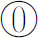
9①1②2③，或写为5，9′1″2‴。韦达改进并推广了求平方根和立方根的方法。这段时期的另一项进展是在算术里使用连分数。我们可能记得印度人——特别是阿里亚伯哈塔——曾用连分数解一次不定方程。邦贝利在他的《代数》（Algebra，1572）里第一个用连分数来逼近平方根。为求
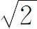
的近似值，他写出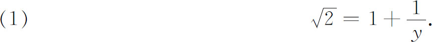
由此得
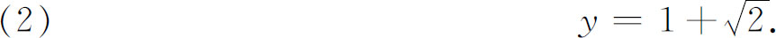
在（1）两边加上1并利用（2），得
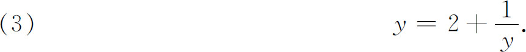
于是由（1）及（3），得
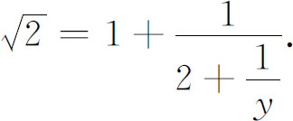
由于y已给出如（3），故
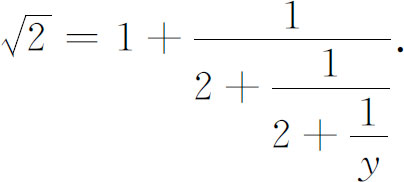
不断把y值的式子代入，邦贝利求得
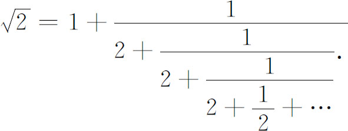
右边也可写成
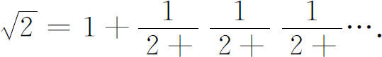
这是个简单的连分数，因为里面的分子都是1；它又是循环的，因分母都重复。邦贝利又给出获得连分数的其他例子。但他并不考虑这展式是否会收敛于它所打算表示的那个数。
英国数学家沃利斯在他的《无穷大的算术》（1655）中把
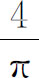
表为无穷乘积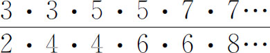
。在该书中他又说布龙克尔（William Brouncker）勋爵（1620—1684）——皇家学会的第一任会长——曾把这乘积化为连分数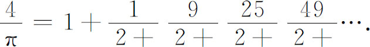
布龙克尔没有对这种形式作进一步的应用。但沃利斯进行了这项工作。他在所著《数学著作集Ⅰ》（Opera Mathematica Ⅰ，1695）中引入了“连分数”这一名称，给出了计算连分数的收敛子的一般法则。这就是，若pn/qn是连分数
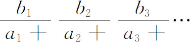
的第n个收敛子，则
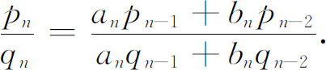
关于pn/qn是否收敛于连分数所表示的那个数，当时还没有得到明确的结果。
16世纪和17世纪算术的最大改进是对数的发明。施蒂费尔已经认识到对数的基本思想。他在《整数的算术》里指出几何数列
1，r，r2，r3，…
的各项与其指数所形成的算术数列
0，1，2，3，…
的各项互相对应。几何数列中两项相乘得出的项，它的指数等于算术数列中相应两项之和。几何级数中两项相除得出的项，其指数等于算术级数中相应两项之差。这一事实也由许凯在《数的科学三部曲》（Le Triparty en la science des nombres，1484）中指出过。施蒂费尔还把两个数列间的这种联系推广到负指数和分数指数的情形。例如，r2被r3除得r-1，它相应于扩充了的算术数列中的-1那一项。但施蒂费尔并没有利用两数列间的这一联系来引入对数。
苏格兰人纳皮尔（John Napier，1550—1617）在1594年左右研究出对数的时候就受了几何数列的项和算术数列的相应项之间这种对应关系的启发。纳皮尔关心的是简化为解决天文问题的球面三角的计算工作。事实上，他曾把研究的初步结果送交第谷·布拉赫征求他的赞许。
纳皮尔在他的《论述对数的奇迹》（Mirifici Logarithmorum Canonis Descriptio，1614）以及他死后出版的遗作《做出对数的奇迹》（Mirifici Logarithmorum Canonis Constructio，1619）中解释了他的想法。因为他搞的是球面三角，所以处理的是正弦的对数。他按照雷格蒙塔努斯的办法，将圆的半径分成107单位，以圆弧的半弦为正弦，以107作为最大的数开始计算。他让107到0的正弦值表示在直线AZ（图13.1）上，并设A朝着Z运动，其速度正比于到Z点的距离。
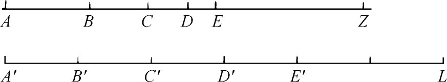
图13.1
严格地说，动点的速度应随着它离开A点的距离连续变化，并且需要用微积分才能真正表达。但若我们考察某一小段时间t，并设AB，BC，CD，…各段长度都是在这段时间里通过的，同时假设在t这段时间里速度不变并取动点在这段时间开始时的速度，那么AZ，BZ，CZ，…这些长度就形成几何数列。因若考虑DZ，并设k是动点速度与它到Z之间距离的比例常数。现因
DZ＝CZ-CD．
又因动点在C处的速度是k（CZ）。于是距离CD＝k（CZ）t。所以
DZ＝CZ-k（CZ）t＝CZ（1-kt）．
这样，序列AZ，BZ，CZ，…中的任一个长度是其前一个长度的1-kt倍。
其次，纳皮尔假定有另一点与A同时开始在直线A′L（图13.1，其右方无限伸长）上以恒速运动，使得当第一点到达B，C，D，…之时，第二点分别到达B′，C′，D′，…。距离A′B′，A′C′，A′D′，…显然形成算术数列。纳皮尔分别把A′B′，A′C′，A′D′，…这些距离取作BZ，CZ，DZ，…的对数。他取AZ或即107的对数为0。这样，当数（正弦值）按几何数列递减时，对数按算术数列递增。这里记为1-kt的量在纳皮尔的原著里是
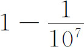
。但他在进行计算对数之际改变了这个比值。我们看到，若取的t愈小，则从AZ到BZ到CZ等的正弦值的减小量就愈小。这样，对数表里的数就愈靠近。
纳皮尔取距离A′B′，A′C′，…为1，2，3，…但那样做并非必需。它们也可以取作
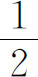
，1，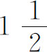
，2，…而方案仍一样行得通。此外，原来那些数的意义同任何量一样，而与它们是否为正弦值不相干，所以纳皮尔的方案实际给出了一般数的对数。纳皮尔本人则是用对数来作球面三角的计算的。“对数”（logarithm）这个术语是纳皮尔创造的，意即“比的数”。“比”是指数列AZ，BZ，CZ，…的公比。他还把对数称为人造的数。
当时有一位数学和天文学教授布里格斯（Henry Briggs，1561—1631）在1615年向纳皮尔建议取10作为底数，使一个数的对数就等于该数的那个10的乘幂中的幂指数。这就跟纳皮尔的方案不同，事先取定了一个底数。布里格斯在计算他的对数时是逐次取10的平方根，即
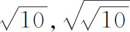
，…，一直取了54次这样的平方根，得出一个略大于1的数A时为止。就是说，他得出一个数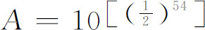
。然后他取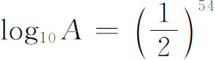
。利用两数乘积的对数等于它们的对数之和这一事实，布里格斯为靠得很近的数算出了一张对数表。现今常用的普通对数表就是从布里格斯对数表演变而来的。比尔奇（Joost Bürgi，1552—1632）是瑞士的一个钟表和仪器匠人，是开普勒在布拉格的一名助手，他也曾有志于简化天文计算。他在1600年左右未悉纳皮尔的工作而独立发明了对数，但他的著作《进数表》（Progress Tabulen）直到1620年才发表。比尔奇也受到了施蒂费尔所指出的事实（几何数列中两项的乘除法可用指数的加减法来完成）的启发而发明对数的。他的算术工作也同纳皮尔的类似。
纳皮尔思想的各种推衍逐步有人引入。许许多多不同的对数表也用代数方法算了出来。其后有詹姆斯·格雷戈里（James Gregory）、布龙克尔勋爵、墨卡托（Nicholas Mercator）［（原名考夫曼（Kaufman，1620—1687）］、沃利斯和哈雷用无穷级数计算对数（参阅第20章第2节）。
虽然普通的做法是像布里格斯那样，取固定的底数，以它的乘幂来代表数，并定义幂指数为该数的对数，但在17世纪初期，人们并不把对数定义为幂指数，因那时还没有用分数指数和无理数指数。到17世纪末有些人认识到对数可以这样来定义，但直到1742年琼斯（William Jones，1675—1749）在给加德纳（William Gardiner）的《对数表》（Table of Logarithms）写的序言中才第一次用这种方法作了系统的叙述。欧拉早就把对数定义为指数，并于1728年在其一篇未发表的手稿《遗作》（Opera Posthuma Ⅱ，800—804）中引入了e作为自然对数的底。
算术上的第二项进展（它的进一步的实现在近代产生深远的影响）是加速算术运算的机械装置和机器的发明。冈特（Edmund Gunter，1581—1626）利用纳皮尔的对数研制出计算滑尺。奥特雷德（William Oughtred，1574—1660）制造出圆盘计算尺。
1642年，帕斯卡发明了能自动从个位进到十位，从十位进到百位等的加法计算机。莱布尼茨在巴黎看到这机器后发明了能做乘法的计算机。他在1677年把他的想法告诉了伦敦的皇家学会，1710年柏林科学院发表了这种想法的书面说明。17世纪末期，莫兰（Samuel Morland，1625—1695）又独立地发明了一架能做加减法的机器和另一架能做乘法的机器。
我们不打算细述计算机发展的历史，因为至少在1940年以前，它们仅是些能作算术运算的简单机械装置，而且对数学进展并无影响。但我们要指出，在上述这种机器和现代电子计算机之间最重大的一步工作是由巴贝奇（Charles Babbage，1792—1871）做出的，他发明了一架原拟用于天文与航海计算方面的机器。他设计的“分析机”是打算先把一些指令输入机器后，让机器完成整个一系列的算术运算。这种运算是在蒸汽动力作用下自动进行的。他在英国政府支持下造出了演示模型。可惜这种机器的制造远远超出了他那个时代工程技术的能力。